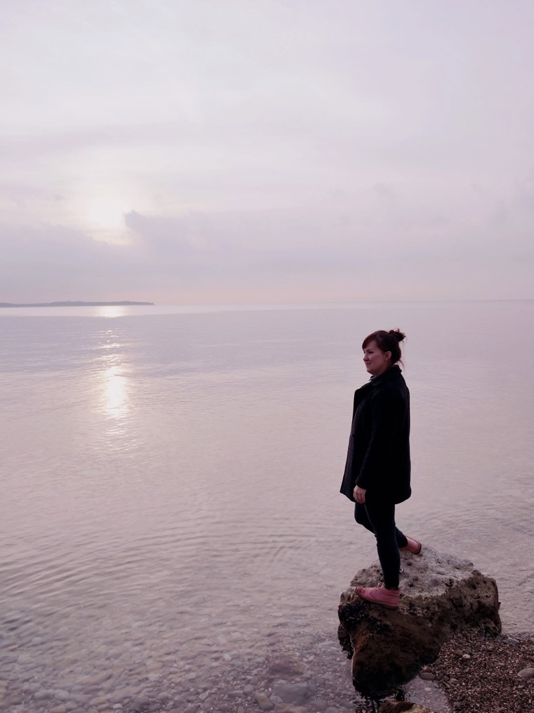

On foot, outdoors — or online, if that suits your life better. Here's who I work with, how I work, and what to expect.
Who works with me
The people I walk with are often:

How I work
As a qualified coach, yoga teacher, and meditation guide, I help people cultivate deeper self-awareness, build resilience, and reconnect with a broader sense of balance and belonging. On foot or outdoors, wherever we're able to walk together.
We are all part of something larger. Our actions and relationships ripple outward into the world around us.
Each of us is on a path toward deeper self-understanding — and we walk it better together than alone.
I walk alongside people, not ahead of them: offering support, presence, and honest reflection as you find your own way.
A mindset of acceptance and non-judgment creates the space where healing, clarity, and real connection can happen.
First
We spend time together — no cost, no pressure. You bring whatever's most present for you right now. I ask questions, and you leave with something useful. We both get a sense of whether this is a good fit.
Then
Most people work with me over a period of months, meeting regularly — outdoors on a walk, or online if that suits your life better. There's space between sessions to let things settle and apply what has emerged.
Throughout
I'll walk beside you through the uncomfortable parts. And when the path forward becomes clearer, we'll make sure it's your path — not the one that "looks right".
In their words
Sarah listened attentively and helped me clarify my own blockers and ideas. Throughout our sessions, I became increasingly more aware of the problems and solutions I need to address.
Samantha — coaching clientOur sessions gave me space to see that I need to slow down and think about where I want to go. Experiencing being coached by Sarah was also really inspiring — it gave me insight into making people feel comfortable.
James — coaching client